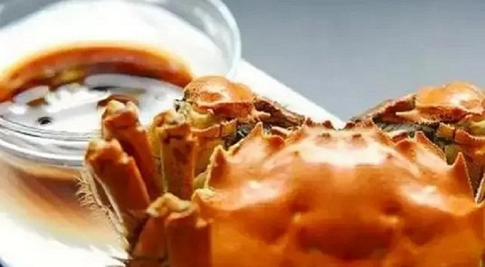
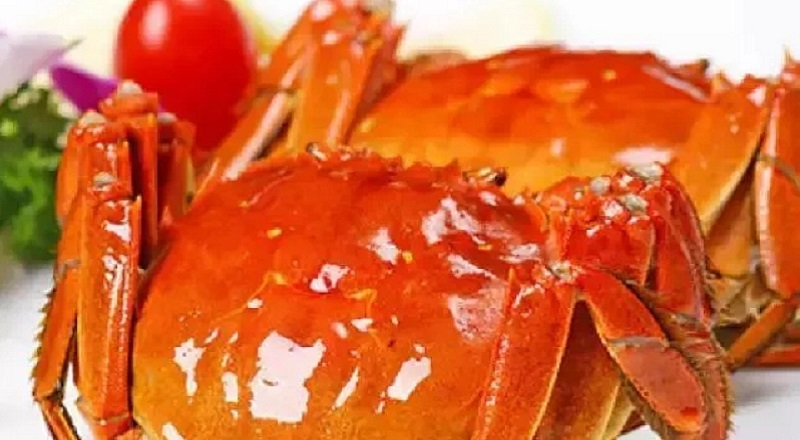

阳澄湖大闸蟹的辩论，我们应该选大的，还是小的？
关于阳澄湖大闸蟹、挑大闸蟹、吃大闸蟹的困惑，我们全部为您解答。
小的不好吃？
很多人都以为大闸蟹的个头越大就越美味，其实事实并非如此。事实上，个头相对小的大闸蟹虽然膏黄不及大蟹多，但往往肉质更细嫩。
大闸蟹的个头大小不一，与蟹农们采取阶梯状放养有关。同期捕捞的大闸蟹，有的放养时间较早，生长周期较长，个头自然更大。相反地，放养较迟的大闸蟹则个头相对小一些。
可以这样理解，从生长年龄来看，个头偏大的蟹是哥哥姐姐，个头偏小的蟹是弟弟妹妹。而个头的大小，本身并不影响蟹本身的美味程度。
大的营养高？
重斤两大闸蟹由于其罕见稀少，的确引来了不少粉丝。但这些大闸蟹是否比普通斤两的更美味呢，实际上大闸蟹无论斤两大小，其生长周期都要持续3个年头。
一般来说，阳澄湖大闸蟹公蟹如果有3.5~4两重，而母蟹在3两重左右都是非常美味的。并不存在斤两越重，营养价值越高的说法。
因此，大个阳澄湖大闸蟹实在是价格不菲，送礼的时候可以根据情况选择大点的，这样比较有面子些。但是自己家食用的话，考虑到实惠的问题，选择个头较小的大闸蟹也不失为明智之举。
选大还是小？
一般来说，3两左右的阳澄湖大闸蟹是较为普遍的，每年阳澄湖大闸蟹长势稍有不同，个别年份4两的也会多些。
但是，如果要找4两多或以上重量的大闸蟹还是有些难的，因为市场总的供应量并不多，这种重量的螃蟹只能占到20%左右。
甚至有些吃货问，有没有一斤多的大闸蟹？一斤多的大闸蟹是非常罕见的，某年阳澄湖大闸蟹蟹王的义拍会中，一只9两2重的公蟹和一只7两重的母蟹得到了许多拍卖者的吹捧，最终这两只引人注目的大闸蟹拍出了总共3万元的高价。
巴城阳澄湖大闸蟹养殖基地，不同大小，品种，规格等你来挑。